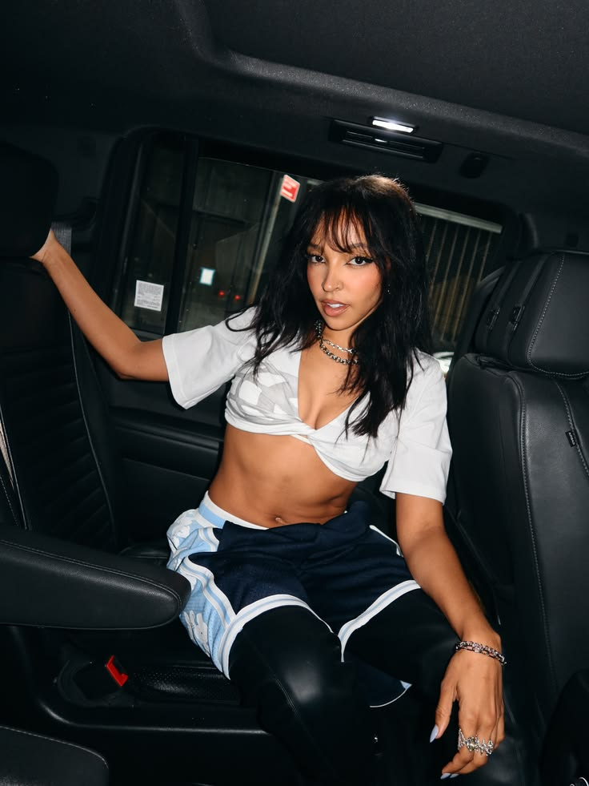
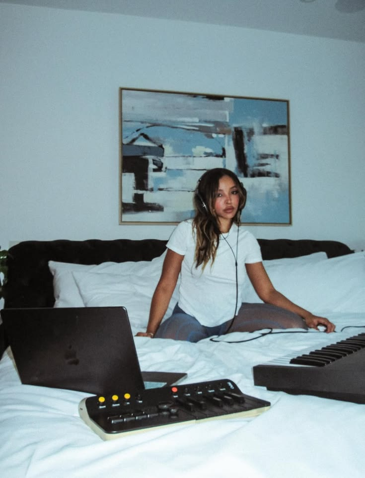
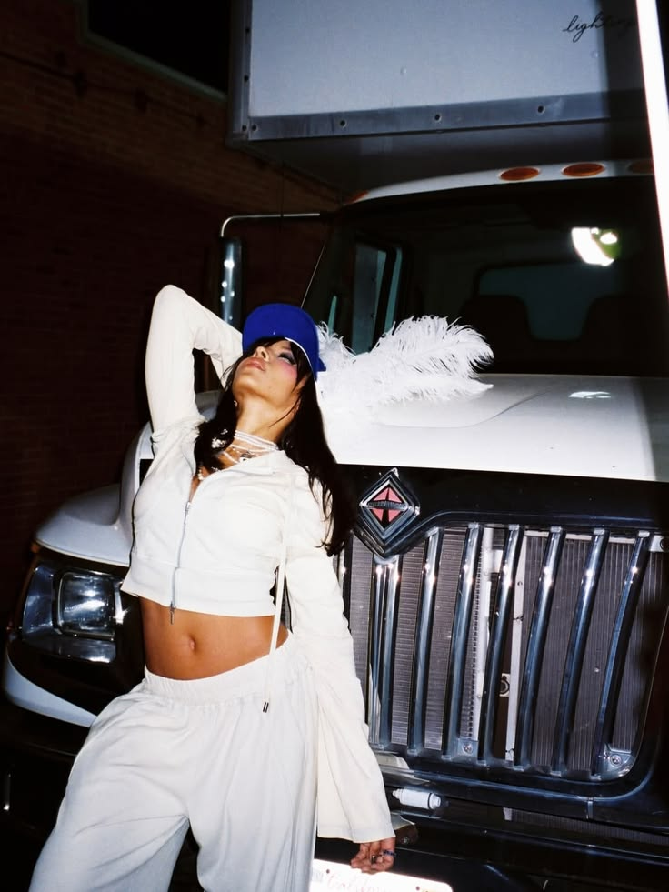

THE ARTIST
Born February 6, 1993 in Lexington, Kentucky, Tinashe Jorgensen Kachingwe, better known as 'Tinashe,' is a 33 year old American singer, songwriter, dancer, and actress. Eldest daughter of Michael and Aimie Kachingwe, grew up in DeKalb, Illinois, until about the age of 8 years old before moving to Los Angeles to pursue her career. Before the start of her music career, Tinashe made her offical acting debut in the year 2000 with her first offical television film appearance in Cora Unashamed. She has also had roles in the Polar Express, Two and A Half Men, Out of Jimmy’s Head, and more. Outside of acting, Tinashe also studied many forms of dance, such as ballet, jazz, tap, as early as the age of 4, and competed competitively until the age of 18.
Tinashe’s music career started long before her signing with RCA Records in 2012. Aside from writing her very first song at the age of 5, "Deep in the Night," Tinashe began recording her own music as early as the age 11 before joining the teen girl group, "The Stunners,” in 2007, who also opened for Justin Bieber's ‘My World Tour,’ in 2010. After the disbandment of The Stunners… (getting into her first mixtape release, signing with RCA, going independent, etc)